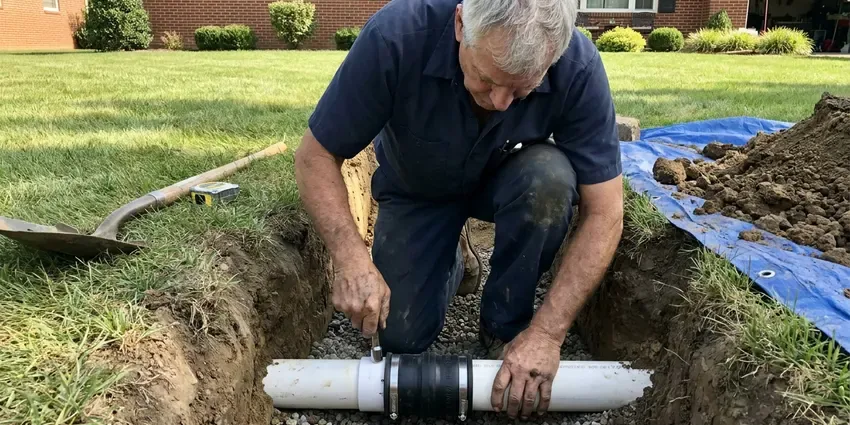

Storm Drain Cleaning in Daly City, CA
When heavy rains hit Daly City, CA, clear storm drains are essential to prevent flooding and property damage. FBL Plumbing provides expert storm drain cleaning to protect your home or business.
- Experienced Technicians
- Jetting and Vacuum Removal
- Upfront Pricing
- Modern Equipment

Need Storm Drain Cleaning in Daly City, CA?
Book a cleaning now and we will flush every inlet, pipe and outlet on your property.
Reliable Storm Drain Cleaning in Daly City, CA
FBL Plumbing specializes in thorough storm drain cleaning for homes and businesses across Daly City, CA. Our team uses professional equipment to remove debris, leaves, sediment, and other obstructions that can cause serious water accumulation issues.
Our expertise includes:
- Clear blockages from leaves, silt, and debris.
- Jetting corrugated and PVC storm pipe without crushing it
- Remove root intrusions using specialized cutters.

Additional Drain Services Services in Daly City, CA
From stubborn kitchen clogs to main sewer backups, our drain services in Daly City, CA restore full flow fast and keep it that way.




Sewer Line Replacement in Daly City


Customers
Why Choose FBL Plumbing for Storm Drain Cleaning in Daly City, CA?
Proper storm drain cleaning is essential in Northern California to manage heavy rainfall and soil conditions that can make drainage problems worse. Many older homes here sit on raised foundations with crawlspaces, which make supply and drain repairs more accessible than slab work. We make sure your system can handle the flow.
- Debris Removal, Silt and gravel are vacuumed out instead of flushed farther down your line.
- Outlet Verification, We verify water exits at the curb, swale or basin as designed.
- Property Protection, Clear drains protect driveways, walkways, and other exterior structures from erosion and cracking caused by standing water.
Citywide Coverage
We clean storm drains on properties across Daly City, from hillside homes with long yard drains to flat lots that rely on dry wells. Our crew handles residential yards as well as HOA shared grounds.
Experienced Team
Each technician at FBL Plumbing undergoes thorough training, focusing on the effective and safe cleaning of storm drains. We pride ourselves on having knowledgeable professionals who can accurately diagnose and resolve even the most complex blockages in Daly City.
Safety-First Approach
We use safe, environmentally responsible methods for all storm drain cleaning, so runoff is handled correctly and your property stays protected. Our team follows careful safety guidelines on every job.
Trusted Certified Daly City Plumbing Services Professionals
At FBL Plumbing, we take pride in providing licensed, certified plumbing services throughout Daly City, CA. Backed by leading industry credentials, our experienced plumbers combine technical skill with genuine customer care. Whether it is repair, installation, or maintenance, we follow strict safety and quality standards to deliver long-lasting results you can trust.
Call Us Now PHCC Plumbing Contractor Recognition
PHCC Plumbing Contractor Recognition Better Business Bureau (BBB) Accreditation
Better Business Bureau (BBB) Accreditation Angi Certified Pro
Angi Certified Pro ISO 9001 Quality Management Certification
ISO 9001 Quality Management CertificationThorough Storm Drain Cleaning Services in Daly City, CA
Hydro Jetting for Storm Drains in Daly City, CA
Hydro jetting is a powerful solution for deeply clogged storm drains in Daly City, CA. This method uses high-pressure water streams to wash out stubborn obstructions like compacted soil, heavy silt, roots, and grease buildup. It is highly effective for thoroughly cleaning the inside of the pipe walls, restoring the drain to its full capacity and preventing a quick return of blockages, a common issue with older drainage systems.

Catch Basin Cleaning in Daly City, CA
Catch basins are critical parts of any storm drainage system in Daly City, CA, designed to collect runoff and trap debris before it enters the main drain lines. Regular cleaning of catch basins is important to prevent them from becoming overloaded and causing blockages further down the system. Our service includes removing built-up leaves, sediment, trash, and other debris from catch basins, so they work correctly and protect your entire drainage system. This preventative maintenance is key to avoiding larger issues.
Storm Drain Video Inspection in Daly City
Before and after cleaning, a video inspection is valuable for storm drains in Daly City. Our cameras can travel through the drain lines, letting us accurately identify the type and location of blockages, assess pipe integrity, and confirm the results of our cleaning. This technology helps prevent unnecessary digging and gives you a precise solution, especially useful for diagnosing issues hidden underground. Many older homes here sit on raised foundations with crawlspaces, which make supply and drain repairs easier to reach than slab work.
Yard and Area Drain Cleaning in Daly City
Yard drains and area inlets collect runoff from lawns, rock landscaping and patios. Over time the grates fill with leaves and the pipes fill with silt and small gravel. We pull the grates, vacuum the inlet box and jet the pipe toward its outlet. This restores the line so it can carry a full storm. We also check that grates are secure and level.
Emergency Storm Drain Unclogging in Daly City
When a severe storm hits Daly City and your drains are overflowing, you need fast help. FBL Plumbing provides emergency storm drain unclogging to quickly address critical blockages. We prioritize urgent calls to minimize water damage to your property, sending rapid response teams with high-powered equipment to restore proper drainage as fast as possible, even during intense weather.
Preventative Storm Drain Cleaning in Daly City, CA
Proactive cleaning is key to avoiding major issues with storm drains in Daly City, CA. We offer scheduled preventative maintenance to keep your drains clear of leaves, debris, and sediment year-round. Regular cleaning can prevent the buildup that leads to severe clogs and flooding during unpredictable rainy seasons, extending the lifespan of your drainage system and protecting your property investment.
Dry Well Cleaning and Inspection in Daly City, CA
Dry wells let storm water soak into the ground instead of flowing to a street. They are found on commercial sites, HOA common areas and some residential lots. Silt slowly seals the settling chamber and the drainage rock, slowing how fast water drains. We vacuum the chamber, inspect the inlet and outlet, and check drain-down time. If the dry well no longer drains properly, we explain options for repair or replacement.

Catch Basin Cleaning Services in Daly City
Catch basins are key parts of many storm drainage systems in Daly City, designed to trap debris before it enters the main pipes. Over time, these basins can fill with leaves, trash, and sediment, reducing their effectiveness. Our service includes thoroughly cleaning out catch basins, removing built-up material so they work correctly and prevent blockages further down the storm drain line, especially important in areas with mature trees.
Storm Drain Cleaning Near Me in Daly City, CA
Local storm drain service matters because big storms can arrive fast and leave little warning. Drought years alternate with very wet years here, so conservation rules and low-flow fixtures are a constant part of plumbing decisions. Our crew is based nearby and can schedule cleanings ahead of the busy season. We serve homes and businesses throughout Daly City.
Looking for storm drain cleaning near me in Daly City, CA? FBL Plumbing is your local expert, always ready to respond promptly to your drainage needs. Our teams are based to provide prompt and efficient service across the entire Daly City metro area.
FBL Plumbing at a Glance
- Licensed and insured plumbers serving Daly City, CA
- Same-day appointments and 24/7 emergency response
- Upfront, flat-rate pricing before work begins
- 4.8-star rated by 834+ Northern California customers
Daly City Map
Daly City Information
- Population
- 99,833
- Area codes
- 650/415/628
- Service area
- Daly City and communities within 40 miles
- Nearby
- South San Francisco, Alameda, San Mateo, Oakland
Effective storm drain cleaning is crucial for homes in Daly City, CA, where heavy rain and shifting soil can lead to significant foundation and property damage if water is not properly diverted. Drought years alternate with very wet years here, so conservation rules and efficient fixtures are a constant part of plumbing decisions.
Expert Services
Trust our professionals for reliable FBL Plumbing solutions in Daly City, CA.
Our Specialized Plumbing Services in Daly City, CA
At FBL Plumbing, we provide a complete range of plumbing services across Daly City, CA. From leak detection to full system installations, our team ensures fast, precise, and affordable service for both residential and commercial properties. Explore our core services below:


Here Is How Our Storm Drain Cleaning Process Works in Daly City, CA
Our storm drain cleaning follows a clear plan that covers every inlet, pipe and outlet.
Request a Quote
Start by calling (669) 319-2034 or filling out our online form to schedule your storm drain cleaning. Our friendly staff will gather details about your issue and arrange a convenient appointment time.
On-Site Assessment
Our trained technicians arrive to perform an initial assessment of your storm drain system. We often use video inspection to pinpoint the exact location and nature of the blockage.
Professional Cleaning
Using professional equipment like hydro jetters, we thoroughly clear the obstruction and clean the drain walls. This removes all debris, silt, and roots for full flow.
Frequently Asked Questions About Storm Drain Cleaning in Daly City
Residential storm drain cleaning in Daly City typically runs $200 to $500 depending on the number of inlets and pipe length. Dry well cleaning and commercial systems typically cost more and are quoted after a site visit.
Common signs of a clogged storm drain include standing water in your yard or driveway after rain, water overflowing from catch basins, unusual pooling near downspouts, or slow drainage in outdoor areas. You might also notice debris piling up around drain grates, a sign the system is struggling to clear water.
Most homes take 1 to 3 hours. Large commercial sites or dry wells may take a half day or longer.
Our technicians are trained to service all types and brands of storm drain systems commonly found in residential and commercial properties. This includes standard PVC, corrugated HDPE, concrete, and cast iron drainpipes, as well as many types of catch basins and grates from manufacturers like NDS, ADS, and Zurn.
Water pooling around grates, overflowing downspouts, standing water against walls and mud stains near inlets are typical signs.
We guarantee that the lines we clean will flow when we leave, and we back our workmanship in writing. Crushed or broken pipe is identified and quoted separately.
You can clear grates and remove surface debris with a scoop. Pipes packed with silt and gravel typically need jetting and vacuum equipment.
Common signs include water pooling around your property after rain, slow drainage from downspouts, visible debris collecting at catch basin grates, and unusual odors coming from the drains. If you notice any of these, it is a good idea to have your storm drains checked.
What People Are Saying About Our Plumbing Experts?

Robert G.
The trenchless sewer replacement saved our front yard. They walked us through the camera inspection footage first so we knew exactly what we were paying for.
Sewer Line Replacement · Daly City, CAJames P.
Our commercial plumbing system had a leak under the sink, and FBL Plumbing handled it professionally. The plumbers arrived quickly and restored everything without disruption to our customers.
Commercial Plumbing · South San Francisco, CA
Emily R.
I called FBL Plumbing for plumbing repair, and the technician was fast, polite, and thorough. They explained the problem clearly and fixed it the same day. I will definitely hire them again. Highly recommended!
Plumbing Repair · Berkeley, CA
Patricia H.
We had a slab leak that two other companies could not find. FBL Plumbing located it in under an hour, explained our options, and the price matched the quote to the dollar.
Slab Leak Repair · Oakland, CA
Sofia M.
Two new toilets installed in one visit, no mess left behind, and the tech even adjusted a faucet he noticed was dripping. Fair pricing and really friendly.
Toilet Installation · South San Francisco, CA
Daniel K.
A pipe burst at 11 pm and they actually answered. The plumber showed up within the hour, shut everything down, and had us back to normal the next morning. Could not ask for more.
Emergency Plumbing · Alameda, CA